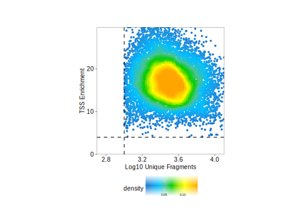

5.2 Manipulating An ArchRProject
Now that we have created an ArchRProject, there are many things that we can do to easily access or manipulate the associated data.
Example 1. The $ accessor allows direct access to cellColData
We can access the cell names associated with each cell:
head(projHeme1$cellNames)
## [1] "scATAC_BMMC_R1#TTATGTCAGTGATTAG-1" "scATAC_BMMC_R1#AAGATAGTCACCGCGA-1"
## [3] "scATAC_BMMC_R1#GCATTGAAGATTCCGT-1" "scATAC_BMMC_R1#TATGTTCAGGGTTCCC-1"
## [5] "scATAC_BMMC_R1#TCCATCGGTCCCGTGA-1" "scATAC_BMMC_R1#AGTTACGAGAACGTCG-1"We can access the sample names associated with each cell:
head(projHeme1$Sample)
## [1] "scATAC_BMMC_R1" "scATAC_BMMC_R1" "scATAC_BMMC_R1" "scATAC_BMMC_R1"
## [5] "scATAC_BMMC_R1" "scATAC_BMMC_R1"We can access the TSS Enrichment Scores for each cell:
quantile(projHeme1$TSSEnrichment)
## 0% 25% 50% 75% 100%
## 4.10900 13.92550 16.81500 19.93025 41.98000Example 2. Subsetting an ArchRProject by cells
There are many ways that we can subset an ArchRProject to obtain only a select set of cells. However, the different ways to subset an ArchRProject have very different effects and should not be considered equivalent.
The only robust way to subset an ArchRProject is to use the subsetArchRProject() function. This function takes a list of cells and an outputDirectory and creates a new full copy of the ArchRProject and corresponding Arrow files in the designated directory. This is the ideal way to subset an ArchRProject because it ensures that only one ArchRProject object is referring to the specified Arrow files (more details on this below). Additionally, by using the dropCells argument, you can remove unnecessary cells from downstream analyses. Setting dropCells = TRUE is almost always the correct choice and setting dropCells = FALSE can lead to some unexpected downstream issues depending on your workflow.
For example, we could use subsetArchRProject() to keep only the cells from a specific sample (shown below) or cluster to perform a subsetted downstream analysis. All you need to do is pass the cellNames of the cells that you would like to retain to the cells parameter.
idxSample <- BiocGenerics::which(projHeme1$Sample %in% "scATAC_BMMC_R1")
projSubset <- subsetArchRProject(
ArchRProj = projHeme1,
cells = projHeme1$cellNames[idxSample],
outputDirectory = "ArchRSubset",
dropCells = TRUE,
force = TRUE
)
## Copying ArchRProject to new outputDirectory : /corces/home/rcorces/scripts/github/ArchR_Website_Testing/bookdown/ArchRSubset
## Copying Arrow Files...
## .copyArrow : Initializing Out ArrowFile
## .copyArrow : Adding Metadata to Out ArrowFile
## .copyArrow : Adding SubMatrices to Out ArrowFile
## Getting ImputeWeights
## No imputeWeights found, returning NULL
## Copying Other Files...
## Copying Other Files (1 of 1): Plots
## Saving ArchRProject...
## Loading ArchRProject...
## Successfully loaded ArchRProject!
##
## / |
## / \
## . / |.
## \\\ / |.
## \\\ / `|.
## \\\ / |.
## \ / |\
## \\#####\ / ||
## ==###########> / ||
## \\##==......\ / ||
## ______ = =|__ /__ || \\\
## ,--' ,----`-,__ ___/' --,-`-===================##========>
## \ ' ##_______ _____ ,--,__,=##,__ ///
## , __== ___,-,__,--'#' ===' `-' | ##,-/
## -,____,---' \\####\\________________,--\\_##,/
## ___ .______ ______ __ __ .______
## / \ | _ \ / || | | | | _ \
## / ^ \ | |_) | | ,----'| |__| | | |_) |
## / /_\ \ | / | | | __ | | /
## / _____ \ | |\ \\___ | `----.| | | | | |\ \\___.
## /__/ \__\ | _| `._____| \______||__| |__| | _| `._____|
## It is important to note that some operations will need to be re-run after project subsetting. Much of this is dictated by common sense. For example, if you want to look at only the subsetted cells on a new UMAP embedding, you need to create that new embedding first. Similarly, if you want to perform sub-clustering, you should almost certainly re-run dimensionality reduction (LSI) first.
The primary disadvantage of subsetArchRProject() is that it makes copies of the Arrow files which can be quite large for bigger data sets. Nevertheless, this is the absolute most stable way to subset a project and is the only way that we recommend.
If your data set size is so massive that copying the Arrow files is not reasonable, you can try subsetting the project manually as illustrated below. However, it is important to note if you do this, you can run into the situation where you have multiple ArchRProject objects pointing to the same Arrow files. You may alter those Arrow files in one project, causing something to unexpectedly break in the other project. We do not consider this type of project subsetting to be stable and strongly recommend against using this strategy.
For example, we can subset the project numerically, for example taking the first 100 cells in the project:
projHeme1[1:100, ]
##
## ___ .______ ______ __ __ .______
## / \ | _ \ / || | | | | _ \
## / ^ \ | |_) | | ,----'| |__| | | |_) |
## / /_\ \ | / | | | __ | | /
## / _____ \ | |\ \\___ | `----.| | | | | |\ \\___.
## /__/ \__\ | _| `._____| \______||__| |__| | _| `._____|
##
## class: ArchRProject
## outputDirectory: /corces/home/rcorces/scripts/github/ArchR_Website_Testing/bookdown/HemeTutorial
## samples(3): scATAC_BMMC_R1 scATAC_CD34_BMMC_R1 scATAC_PBMC_R1
## sampleColData names(1): ArrowFiles
## cellColData names(15): Sample TSSEnrichment ... DoubletEnrichment
## BlacklistRatio
## numberOfCells(1): 100
## medianTSS(1): 10.794
## medianFrags(1): 10200.5And we can subset the project based on certain cell names:
projHeme1[projHeme1$cellNames[1:100], ]
##
## ___ .______ ______ __ __ .______
## / \ | _ \ / || | | | | _ \
## / ^ \ | |_) | | ,----'| |__| | | |_) |
## / /_\ \ | / | | | __ | | /
## / _____ \ | |\ \\___ | `----.| | | | | |\ \\___.
## /__/ \__\ | _| `._____| \______||__| |__| | _| `._____|
##
## class: ArchRProject
## outputDirectory: /corces/home/rcorces/scripts/github/ArchR_Website_Testing/bookdown/HemeTutorial
## samples(3): scATAC_BMMC_R1 scATAC_CD34_BMMC_R1 scATAC_PBMC_R1
## sampleColData names(1): ArrowFiles
## cellColData names(15): Sample TSSEnrichment ... DoubletEnrichment
## BlacklistRatio
## numberOfCells(1): 100
## medianTSS(1): 10.794
## medianFrags(1): 10200.5We can subset the project to keep all cells corresponding to a specific sample:
idxSample <- BiocGenerics::which(projHeme1$Sample %in% "scATAC_BMMC_R1")
cellsSample <- projHeme1$cellNames[idxSample]
projHeme1[cellsSample, ]
##
## ___ .______ ______ __ __ .______
## / \ | _ \ / || | | | | _ \
## / ^ \ | |_) | | ,----'| |__| | | |_) |
## / /_\ \ | / | | | __ | | /
## / _____ \ | |\ \\___ | `----.| | | | | |\ \\___.
## /__/ \__\ | _| `._____| \______||__| |__| | _| `._____|
##
## class: ArchRProject
## outputDirectory: /corces/home/rcorces/scripts/github/ArchR_Website_Testing/bookdown/HemeTutorial
## samples(3): scATAC_BMMC_R1 scATAC_CD34_BMMC_R1 scATAC_PBMC_R1
## sampleColData names(1): ArrowFiles
## cellColData names(15): Sample TSSEnrichment ... DoubletEnrichment
## BlacklistRatio
## numberOfCells(1): 4932
## medianTSS(1): 15.2575
## medianFrags(1): 2771We can subset the project to only keep cells that meet a specific cutoff for the TSS enrichment score:
idxPass <- which(projHeme1$TSSEnrichment >= 8)
cellsPass <- projHeme1$cellNames[idxPass]
projHeme1[cellsPass, ]
##
## ___ .______ ______ __ __ .______
## / \ | _ \ / || | | | | _ \
## / ^ \ | |_) | | ,----'| |__| | | |_) |
## / /_\ \ | / | | | __ | | /
## / _____ \ | |\ \\___ | `----.| | | | | |\ \\___.
## /__/ \__\ | _| `._____| \______||__| |__| | _| `._____|
##
## class: ArchRProject
## outputDirectory: /corces/home/rcorces/scripts/github/ArchR_Website_Testing/bookdown/HemeTutorial
## samples(3): scATAC_BMMC_R1 scATAC_CD34_BMMC_R1 scATAC_PBMC_R1
## sampleColData names(1): ArrowFiles
## cellColData names(15): Sample TSSEnrichment ... DoubletEnrichment
## BlacklistRatio
## numberOfCells(1): 10499
## medianTSS(1): 16.899
## medianFrags(1): 3042Example 3. Adding data to an ArchRProject
We can add columns to cellColData to store any type of cell-specific metadata relevant to our project.
For example, we can add a column to cellColData that contains more legible sample names by removing excess info from the original sample names:
bioNames <- gsub("_R2|_R1|scATAC_","",projHeme1$Sample)
head(bioNames)
## [1] "BMMC" "BMMC" "BMMC" "BMMC" "BMMC" "BMMC"One way to add a column called to cellColData is by directly using the $ accessor.
projHeme1$bioNames <- bioNamesAlternatively, we can add a column to cellColData using the addCellColData() function. ArchR allows for the addition of columns that only contain information for a subset of cells.
bioNames <- bioNames[1:10]
cellNames <- projHeme1$cellNames[1:10]
projHeme1 <- addCellColData(ArchRProj = projHeme1, data = paste0(bioNames),
cells = cellNames, name = "bioNames2")By default, ArchR will fill in missing entries with NA. Because of this, when we can compare these two columns, we see NA filled in where data wasnt available for bioNames2:
getCellColData(projHeme1, select = c("bioNames", "bioNames2"))
## DataFrame with 10660 rows and 2 columns
## bioNames bioNames2
## <character> <character>
## scATAC_BMMC_R1#TTATGTCAGTGATTAG-1 BMMC BMMC
## scATAC_BMMC_R1#AAGATAGTCACCGCGA-1 BMMC BMMC
## scATAC_BMMC_R1#GCATTGAAGATTCCGT-1 BMMC BMMC
## scATAC_BMMC_R1#TATGTTCAGGGTTCCC-1 BMMC BMMC
## scATAC_BMMC_R1#TCCATCGGTCCCGTGA-1 BMMC BMMC
## ... ... ...
## scATAC_PBMC_R1#GCTGCGAAGATCCGAG-1 PBMC NA
## scATAC_PBMC_R1#GCAGCTGGTGGCCTTG-1 PBMC NA
## scATAC_PBMC_R1#GCAGATTGTACGCAAG-1 PBMC NA
## scATAC_PBMC_R1#TTCGTTACATTGAACC-1 PBMC NA
## scATAC_PBMC_R1#CGCTATCGTGAGGTCA-1 PBMC NAExample 4. Obtaining columns from cellColData
ArchR provides the getCellColData() function to enable easy retreival of metadata columns from an ArchRProject.
For example, we can retrieve a column by name, such as the number of unique nuclear (i.e. non-mitochondrial) fragments per cell:
df <- getCellColData(projHeme1, select = "nFrags")
df
## DataFrame with 10660 rows and 1 column
## nFrags
## <numeric>
## scATAC_BMMC_R1#TTATGTCAGTGATTAG-1 26189
## scATAC_BMMC_R1#AAGATAGTCACCGCGA-1 20648
## scATAC_BMMC_R1#GCATTGAAGATTCCGT-1 18990
## scATAC_BMMC_R1#TATGTTCAGGGTTCCC-1 18296
## scATAC_BMMC_R1#TCCATCGGTCCCGTGA-1 17458
## ... ...
## scATAC_PBMC_R1#GCTGCGAAGATCCGAG-1 1038
## scATAC_PBMC_R1#GCAGCTGGTGGCCTTG-1 1037
## scATAC_PBMC_R1#GCAGATTGTACGCAAG-1 1033
## scATAC_PBMC_R1#TTCGTTACATTGAACC-1 1033
## scATAC_PBMC_R1#CGCTATCGTGAGGTCA-1 1002Instead of selecting a column by name, we can actually perform operations on a given column using its column name:
df <- getCellColData(projHeme1, select = c("log10(nFrags)", "nFrags - 1"))
df
## DataFrame with 10660 rows and 2 columns
## log10(nFrags) nFrags - 1
## <numeric> <numeric>
## scATAC_BMMC_R1#TTATGTCAGTGATTAG-1 4.41812 26188
## scATAC_BMMC_R1#AAGATAGTCACCGCGA-1 4.31488 20647
## scATAC_BMMC_R1#GCATTGAAGATTCCGT-1 4.27852 18989
## scATAC_BMMC_R1#TATGTTCAGGGTTCCC-1 4.26236 18295
## scATAC_BMMC_R1#TCCATCGGTCCCGTGA-1 4.24199 17457
## ... ... ...
## scATAC_PBMC_R1#GCTGCGAAGATCCGAG-1 3.01620 1037
## scATAC_PBMC_R1#GCAGCTGGTGGCCTTG-1 3.01578 1036
## scATAC_PBMC_R1#GCAGATTGTACGCAAG-1 3.01410 1032
## scATAC_PBMC_R1#TTCGTTACATTGAACC-1 3.01410 1032
## scATAC_PBMC_R1#CGCTATCGTGAGGTCA-1 3.00087 1001Example 5. Plotting QC metrics - log10(Unique Fragments) vs TSS enrichment score
Repeating the example shown above, we can easily obtain standard scATAC-seq metrics for quality control of individual cells. We have found that the most robust metrics for quality control are the TSS enrichment score (a measure of signal-to-background in ATAC-seq data) and the number of unique nuclear fragments (because cells with very few fragments do not have enough data to confidently analyze).
df <- getCellColData(projHeme1, select = c("log10(nFrags)", "TSSEnrichment"))
df
## DataFrame with 10660 rows and 2 columns
## log10(nFrags) TSSEnrichment
## <numeric> <numeric>
## scATAC_BMMC_R1#TTATGTCAGTGATTAG-1 4.41812 7.204
## scATAC_BMMC_R1#AAGATAGTCACCGCGA-1 4.31488 7.949
## scATAC_BMMC_R1#GCATTGAAGATTCCGT-1 4.27852 4.447
## scATAC_BMMC_R1#TATGTTCAGGGTTCCC-1 4.26236 6.941
## scATAC_BMMC_R1#TCCATCGGTCCCGTGA-1 4.24199 4.771
## ... ... ...
## scATAC_PBMC_R1#GCTGCGAAGATCCGAG-1 3.01620 24.257
## scATAC_PBMC_R1#GCAGCTGGTGGCCTTG-1 3.01578 22.537
## scATAC_PBMC_R1#GCAGATTGTACGCAAG-1 3.01410 19.888
## scATAC_PBMC_R1#TTCGTTACATTGAACC-1 3.01410 30.000
## scATAC_PBMC_R1#CGCTATCGTGAGGTCA-1 3.00087 21.287Now lets plot the number of unique nuclear fragments (log10) by the TSS enrichment score. This type of plot is key for identifying high quality cells. You’ll notice that the cutoffs that we previously specified when creating the Arrow files (via filterTSS and filterFrags) have already removed low quality cells. However, if we noticed that the previously applied QC filters were not adequate for this sample, we could further adjust our cutoffs based on this plot or re-generate the Arrow files if needed.
p <- ggPoint(
x = df[,1],
y = df[,2],
colorDensity = TRUE,
continuousSet = "sambaNight",
xlabel = "Log10 Unique Fragments",
ylabel = "TSS Enrichment",
xlim = c(log10(500), quantile(df[,1], probs = 0.99)),
ylim = c(0, quantile(df[,2], probs = 0.99))
) + geom_hline(yintercept = 4, lty = "dashed") + geom_vline(xintercept = 3, lty = "dashed")
p
To save an editable vectorized version of this plot, we use plotPDF(). This saves the plot within the “Plots” sub-directory of our ArchRProject directory (defined by getOutputDirectory(projHeme1)).
plotPDF(p, name = "TSS-vs-Frags.pdf", ArchRProj = projHeme1, addDOC = FALSE)
## Plotting Ggplot!